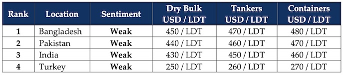

GMS Week 21 – GMS PODCASTS!
in Weekly Demolition Reports 26/05/2025

GMS is pleased to announce a new social-media avenue to reach our readers on the go with the launch of GMS Podcasts, a brand-new series focused on the upcoming enforcement of the Hong Kong Convention as it goes live on June 26th, 2025, across all sub-continent ship recycling markets. GMS Podcasts will be an avenue to address increasingly important topics across the maritime and ship recycling spaces, bringing them to the fore for a wider audience with the help of the latest AI tools. Episode 1 is now live covering the origins of the HKC, the countries and people behind it, what a post June 26th world means for the future of ship recycling, and what ship owners should prepare for when they eventually decide to pull out their recycling charts. Be sure to tune in on your preferred platform(s) as below and follow us to be notified about upcoming shows and topics:
Spotify‖ Apple Podcast ‖ YouTube Music ‖ Amazon Music ‖ Podbean
Out of the digital realm and into the real one, a new tariff session of testing international economies has once again reared its ugly head with Trump specifically targeting India’s retaliatory tariffs with the WTO causing a mixed reaction in the sub-continent ship recycling destinations as the US. Dollar plummeted against the Indian Rupee this week and gained ground against Bangladeshi, Pakistani, and (of course) Turkish currencies by the time the week ended. But the tariff-high didn’t end there as Trump once again announced 50% tariffs on the EU this week, showing just how unpredictable and volatile the global business atmosphere will remain under his administration for the news 3 years, 8 months, 1 week…
Global stock markets, ship recycling nation currencies, and commodity prices collectively took hits as a result of Trump’s actions causing freight markets to cool even further this week, as smaller trading sectors failed the most and dragged the overall Baltic Exchange Dry Index down about 0.1% despite the larger dry sector making marginal gains, while containers and certain tanker segments also start to see declines of their own, further indicating what may be a busier inflow of tonnage over the second half of 2025. On the back of faltering global trade, oil futures too continue their retreat resulting in the barrel declining across the week, to register a minor improvement by the end of the week and still end at an overall lower level of USD 61.50/barrel.
On the ship recycling front, sub-continent markets are gradually entering the monsoon season on a weaker note, having faced political, regulatory, and currency issues, a war, and evolving tariff woes that continue to see prices recycling prices significantly cool since the peaks closer to USD 500/LDT witnessed earlier in the year. Bangladesh continues to endure delays and teething problems after the announcement that only HKC yards would be allowed to import vessels as currently only 9 yards are HKC certified and can obtain NOCs to import and at least 20 more trying to improve their infrastructure before the convention comes into force on June 26th. Pakistan meanwhile remains lagging behind with not a single yard HKC approved and all of this pressure building up at a time when Gadani remains empty, buyers struggle to remain price-competitive, and Gadani remains 2nd on the market rankings. India and Turkey? Read on…Turkey actually has a sale to report!
For Week 21 of 2025, GMS Market Rankings / vessel indications are as below.

📄 Download PDF: Ship-recycling-market-insight-Week-21-05-23-2025-GMS_Podcasts.pdfSource: GMS,Inc. https://www.gmsinc.net/gms_new/index.php/web
 Translate
Translate{kind=link}